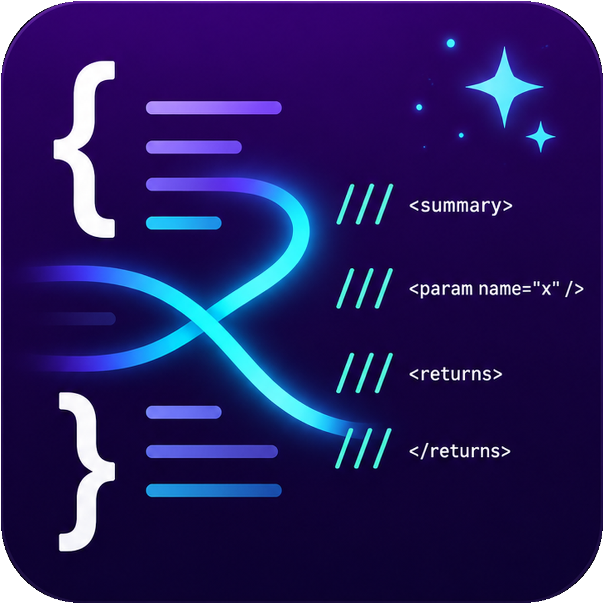

XML comments
Generation and sync of summaries, params, returns, and exceptions. Works for both C# and VB.NET files.

Limited beta
A documentation-focused Visual Studio extension for XML comments, method summaries, and code explanation workflows — aimed at consistency over generated filler.

Generation and sync of summaries, params, returns, and exceptions. Works for both C# and VB.NET files.
Live diagnostics and code fixes that identify missing, stale, or weak comments. C# only in this beta. VB.NET quality analysis is planned.
Aimed at clear documentation patterns instead of random generated filler that looks right but reads wrong.
Validate whether the tool saves time without producing comments that feel generic or wrong. The key question is whether the output is something a developer would actually keep.
Beta access is handled manually. Approved testers receive a package with everything needed to get started.
Your Visual Studio version, whether you can test against a real project, and any specific workflows you want to evaluate.
A controlled beta ZIP containing the installer, reviewer guide, license key, and known issues list.
Beta installers, keys, and reviewer guides are not hosted on the public website.
Email beta@cipherchimpsoftware.com — include your Visual Studio version.